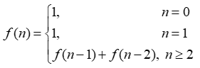

Варіант 11
11.1.Послідовність 1, 1, 2, 3, 5, 8, ... складається з чисел Фібоначчі. Кожен елемент,
починаючи з третього, дорівнює сумі двох попередніх. Рекурентне співвідношення для
розрахунку чисел Фібоначчі таке:

Ввести з клавіатури два натуральних числа m та n, які означають кількість чисел
та номер числа в послідовності Фібоначчі. Вивести послідовність чисел Фібоначчі в
кількості m елементів та значення n-го числа. Передбачити випадок m < n.
Визначити глибину рекурсії.
11.2 Створити рекурсивну функцію, яка отримує числа, зчитуючи їх з клавіатури, і
перевіряє їх на непарність. Кінець вводу - число 0. Функція не повертає значення,
а відразу ж виводить результат на екран, зберігаючи порядок ведених чисел. У цьому
завданні не можна використовувати глобальні змінні і передавати будь-які аргументи
в рекурсивну функцію. Основна програма повинна складатися тільки з виклику цієї
функції. Контрольний тест: введені числа 3 2 1 0, отриманий результат: 3 1.